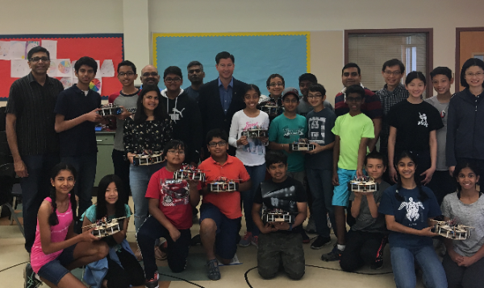

After learning the basics of the python coding language, our next project was to create a game or story using only text. My partner and I based our game off of a hectic, last minute thanksgiving dinner preparation. What makes our plot fun is that we incorporated realistic and relatable scenarios into our program! Here is the flow chart of my game and the code.
After learning the basics of the python coding language, our next project was to create a game or story using only text. My partner and I based our game off of a hectic, last minute thanksgiving dinner preparation. What makes our plot fun is that we incorporated realistic and relatable scenarios into our program! Here is the flow chart of my game and the code.
The website which you are viewing righ now is the online portfolio that I coded on my own using cloud9! It is currently HTML based.
Using Massachusetts Institute of Technology's app inventor program, I created and coded a mini golf game app. Along with the basic ball control and bakground, my partner and I worked to code new and more detailed obstacles/ situations, as well as factors such as wind speed to make the game more accurate in terms of mini golf in real life. You can find the full documentation here.
On e of the first projects I completed in computer science engineering is a game through scratch. Scratch is a programming language and community in which you can create you own interactive games, stories, and animations. The game I created is named Disneyland After Dark, and is an engaging game in which the user decides on the course of the game themselves. Their decisions are what determine the different obstacles they encounter. This game is completely original, and I am proud about how the final product turned out. The process of coming up with a game idea and actually creating it took a few weeks, but the end product was worth the time. You can check out the final game below! You can view the entire docmentation here.
In 8th grade, I was a part of Fallon's Engineering Lab. First, we learned the basics of engineering, and then built our robotics completely from scratch. We figured out how to properly wire up our robots to get them to function efficiently. We coded our robots in python and competed in a competition with 3 events, two of which I secured third place in!
 MailDublin High School